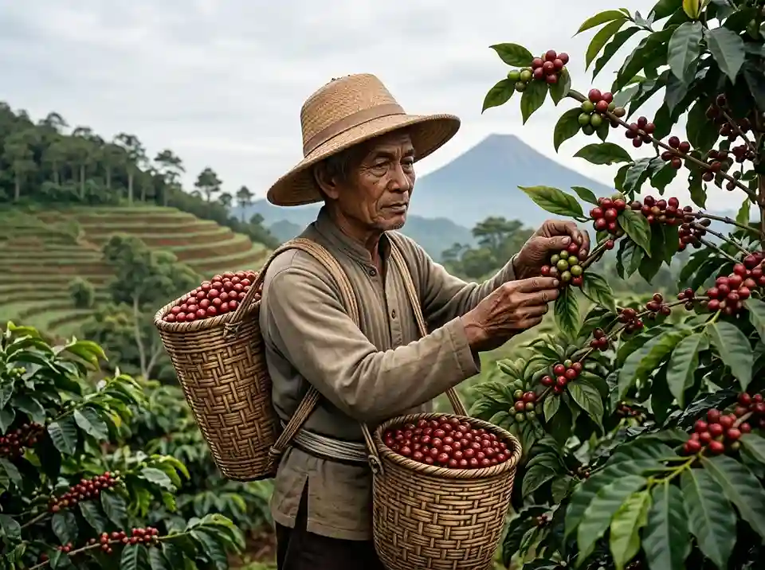

Batang Coffee Heritage
Tentang Kopi Saji
Lahir dari kecintaan pada seduhan lokal, Kopi Saji menyajikan racikan biji kopi pilihan petani daerah untuk menemani setiap momen santai, nugas, hingga obrolan hangatmu.

Nilai yang Kami Bawa
Tiga hal yang selalu kami jaga di setiap cangkir yang kami sajikan.
Hasil Petani Lokal
Menggunakan biji kopi pilihan langsung dari petani di wilayah sekitar Batang.
Proses Terpercaya
Diolah secara telaten dengan standar kebersihan dan kesegaran yang terjamin.
Pelayanan Hangat
Menghadirkan kenyamanan dan kehangatan dalam setiap cangkir seduhan.